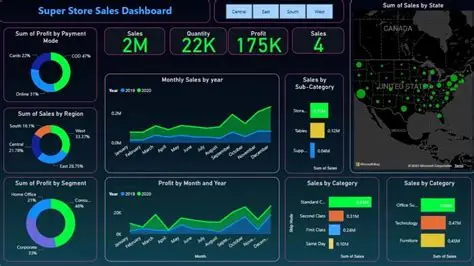
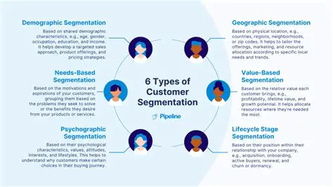

Cientista de Dados com foco em Machine Learning, IA Generativa e soluções orientadas a negócios.
Data Scientist • Python • Machine Learning • IA Generativa
Sou apaixonada por transformar dados em soluções reais. Trabalho com análise preditiva, visualização de dados, IA generativa e desenvolvimento de modelos que ajudam empresas a tomarem decisões mais inteligentes.
Classificação, regressão, clustering e modelos preditivos.
Pandas, NumPy, Scikit-Learn, Matplotlib, Seaborn.
LLMs, embeddings, automações e aplicações práticas.
Dashboards claros e orientados a decisão.
Entendimento profundo dos dados e identificação de padrões.
Construção, teste e otimização de modelos de Machine Learning.
Transformação de modelos em soluções reais e utilizáveis.

Modelo preditivo desenvolvido em Python para estimar vendas futuras com base em séries temporais e variáveis de negócio.
Python • Pandas • Scikit-Learn • Matplotlib • Jupyter Notebook

Segmentação de clientes usando clustering e análise de comportamento para identificar grupos com padrões semelhantes.
Python • Scikit-Learn • K-Means • Data Visualization